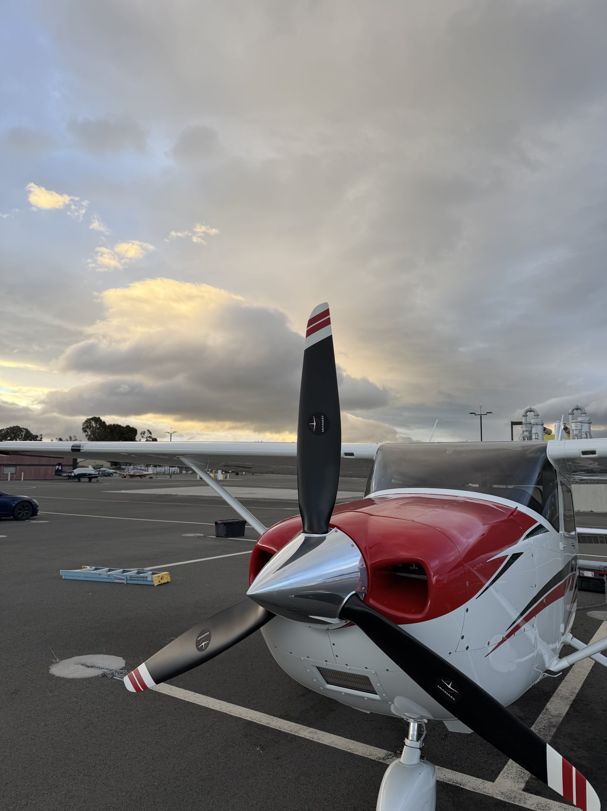
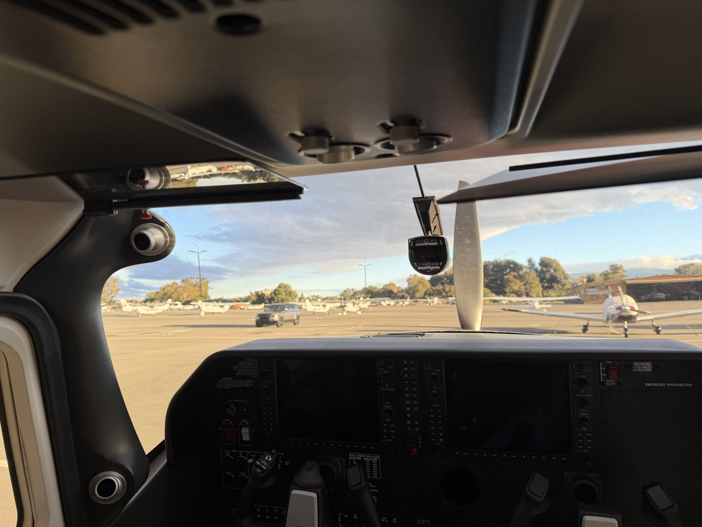

What I fly and instruct in
Aircraft
The airplanes I instruct in, and what I need before we fly yours. If your airplane is not listed, ask — I may already fly it.
Cessna 182 with the Garmin G1000

Glass cockpit from day one. The Cessna 182 Skylane with the Garmin G1000 gives you a primary flight display, a multi-function display with the moving map and engine data, and the same workflow you will find in the airplanes you fly next. It is a high-performance airplane — more than 200 horsepower — so flying it also earns the high-performance endorsement.
| Aircraft | Cessna 182 Skylane |
| Avionics | Garmin G1000 glass cockpit |
| Arrangement | TBDclub aircraft, Jack's own, or both |
| Based at | TBDbase airport |

Other airplanes I instruct in
TBDother makes and models
Your own aircraft
I am glad to instruct in an airplane you own or rent, whether for primary training, a rating, a flight review or a checkout. Insurance requirements and what I need to see before our first flight are on Rates & Policies.
Simulators
TBDsimulator or ATD, if any